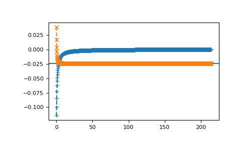

gftool.cpa.solve_fxdocc_root¶
-
gftool.cpa.solve_fxdocc_root(iws, e_onsite, concentration, hilbert_trafo: Callable[[complex], complex], beta: float, occ: Optional[float] = None, self_cpa_iw0=None, mu0: float = 0, weights=1, n_fit=0, restricted=True, **root_kwds) → gftool.cpa.RootFxdocc[source]¶ Determine the CPA self-energy by solving the root problem for fixed occ.
- Parameters
- iws(N_iw) complex array_like
Positive fermionic Matsubara frequencies.
- e_onsite(N_cmpt) float or (…, N_iw, N_cmpt) complex np.ndarray
On-site energy of the components. This can also include a local frequency dependent self-energy of the component sites. If multiple non-frequency dependent on-site energies should be considered simultaneously, pass an on-site energy with N_z=1: e_onsite[…, np.newaxis, :].
- concentration(…, N_cmpt) float array_like
Concentration of the different components used for the average.
- hilbert_trafoCallable[[complex], complex]
Hilbert transformation of the lattice to calculate the coherent Green’s function.
- betafloat
Inverse temperature.
- occfloat
Total occupation.
- self_cpa_iw0, mu0(…, N_iw) complex np.ndarray and float, optional
Starting guess for CPA self-energy and chemical potential. self_cpa_iw0 implicitly contains the chemical potential mu0, thus they should match.
- Returns
- root.self_cpa(…, N_iw) complex np.ndarray
The CPA self-energy as the root of
self_root_eq.- root.mufloat
Chemical potential for the given occupation occ.
- Other Parameters
- weights(N_iw) float np.ndarray, optional
Passed to
gftool.density_iw. Residues of the frequencies with respect to the residues of the Matsubara frequencies 1/beta. (default: 1.) For Padé frequencies this needs to be provided.- n_fitint, optional
Passed to
gftool.density_iw. Number of additionally fitted moments. If Padé frequencies are used, this is typically not necessary. (default: 0)- restrictedbool, optional
Whether self_cpa_z is restricted to self_cpa_z.imag <= 0. (default: True) Note, that even if restricted=True, the imaginary part can get negative within tolerance. This should be removed by hand if necessary.
- root_kwds
Additional arguments passed to
scipy.optimize.root. method can be used to choose a solver. options=dict(fatol=tol) can be specified to set the desired tolerance tol.
- Raises
- RuntimeError
If unable to find a solution.
See also
Examples
>>> from functools import partial >>> beta = 30 >>> e_onsite = [-0.3, 0.3] >>> conc = [0.3, 0.7] >>> hilbert = partial(gt.bethe_gf_z, half_bandwidth=1) >>> occ = 0.5,
>>> iws = gt.matsubara_frequencies(range(1024), beta=30) >>> self_cpa_iw, mu = gt.cpa.solve_fxdocc_root(iws, e_onsite, conc, ... hilbert, occ=occ, beta=beta)
>>> import matplotlib.pyplot as plt >>> __ = plt.plot(iws.imag, self_cpa_iw.imag, '+--') >>> __ = plt.axhline(np.average(e_onsite, weights=conc) - mu) >>> __ = plt.plot(iws.imag, self_cpa_iw.real, 'x--') >>> plt.show()
check occupation
>>> gf_coher_iw = hilbert(iws - self_cpa_iw) >>> gt.density_iw(iws, gf_coher_iw, beta=beta, moments=[1, self_cpa_iw[-1].real]) 0.499999...
check CPA
>>> self_compare = gt.cpa.solve_root(iws, np.array(e_onsite)-mu, conc, ... hilbert_trafo=hilbert) >>> np.allclose(self_cpa_iw, self_compare, atol=1e-5) True
{kind=link}